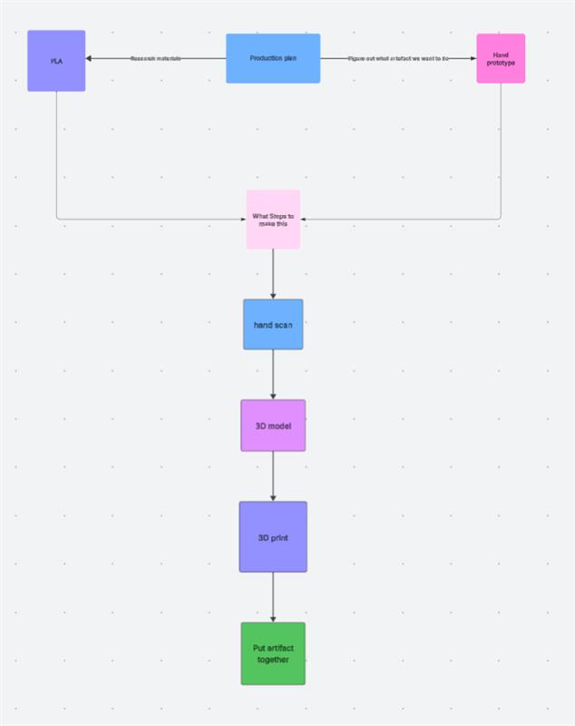
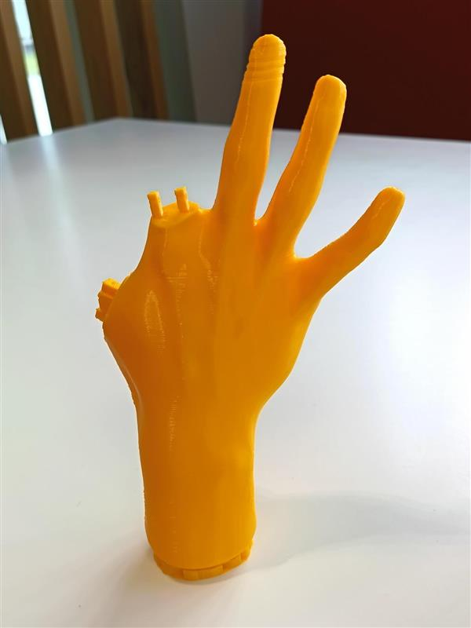
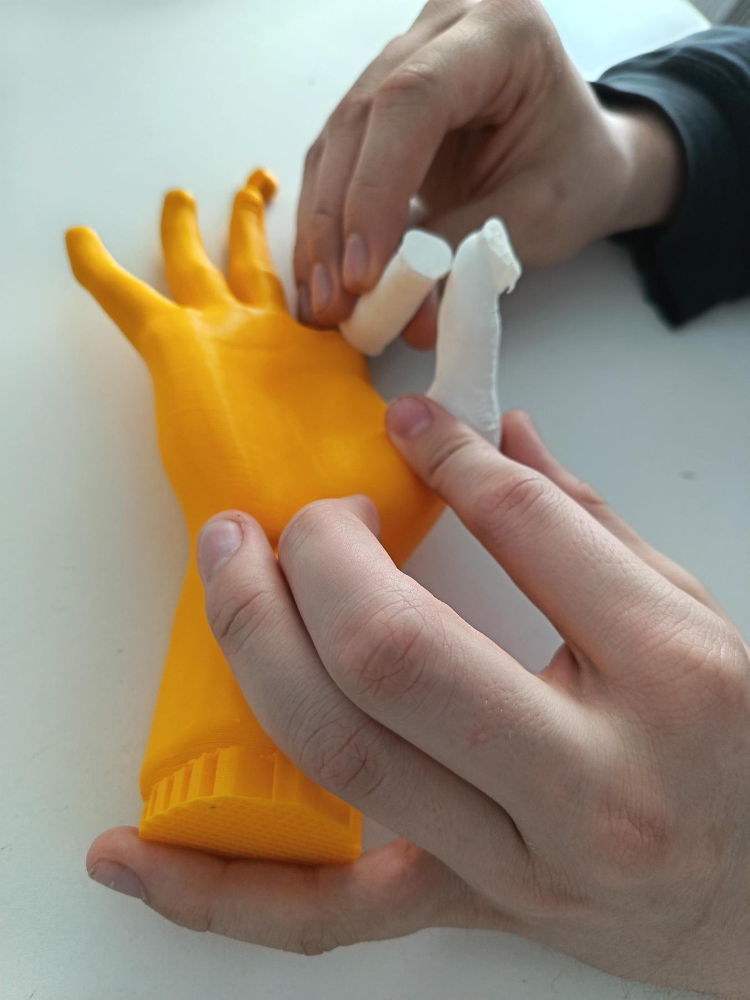
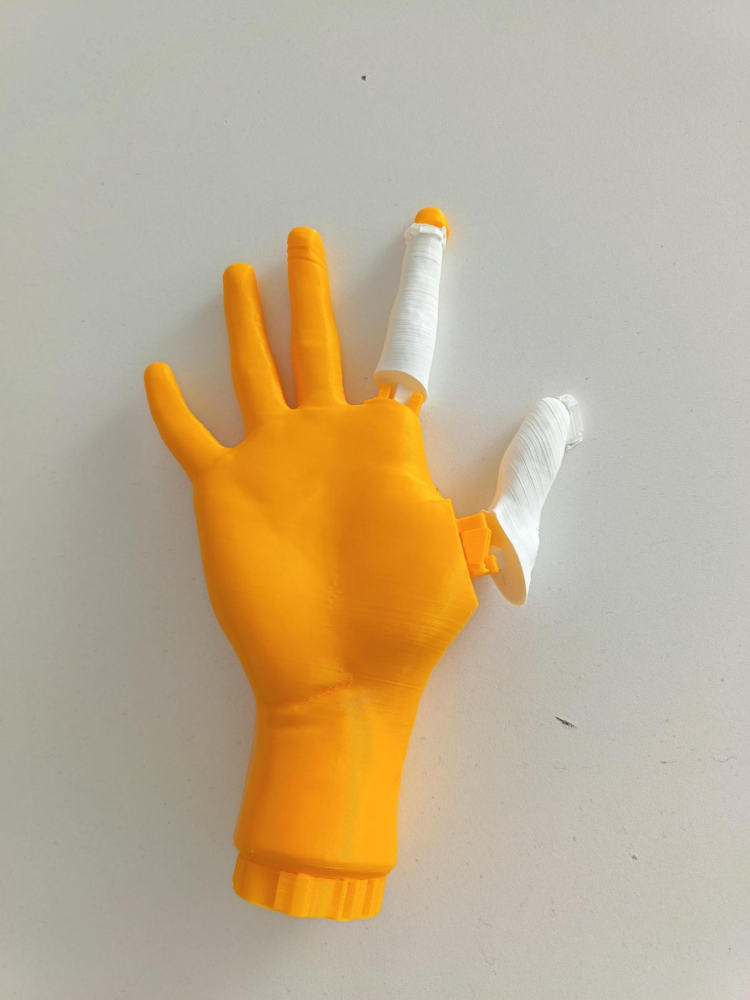

Robotic hand model
Introduction
This website will go through the steps of how the artefact of the Robotic Hand was built, and the processes and experiences I went through while trying to find the best way to create it The website will also be going through why and how each workshop was or was not used for the creation of the artefact with details of production phases and in depth reasons as to why. I will be displaying 3D models and 2D of the artefact to demonstrate the processes of how it went from basic scan to full out artefact.
Production Phase
[1]This section will detail the production phase of the robotic hand, including materials used, and how the build process was approached from initial assembly through to testing and final adjustments. To start off with I had to think of the main goal of the model and what was the reason is to make it that way, with some brainstorming I decided that a hand model that can hold objects seemed like a good concept to 3D print and a fun experience to develop. the materials was an important part to making the artefact, to decide what to include in the artefact we did some research about what materials are best for 3D printing and safest for movement. I found out that PLA is a polylactic acid and is an advantage for printing this artefact because it is an easy to print material with a low cooling temperature and compared to other materials like nylon or polycarbonate those materials have the disadvantages of being more expensive and harder to print with since its high melting point. the material also has a clean and nice surface finish which makes the hand look more realistic which is good because the goal is to make a prototype hand that can hold items. The next step is deciding what kind of design the modelled hand should have this would mean looking into what kind of joints the hand should have and what kind of movement the hand should be able to do. I decided that the hand should be able to move back and forth, therefore the best hinge design would be the pin hinge. This means making holes in the connectors of the finger, thumb and palm then creating a pin shaped object to insert inside of the holes keeping them in place with back-and-forth movement. The next step is to figure out what workshops would be the best for creating the artefact.

This is the workflow diagram that I will follow to ensure that the product is fully made and given the best chance to succeed.
3D Scanning Hardware, Software, and Workshop Facilities
[2]This section will explain how the workshop for 3D scanning worked and what was used to create a hand scan of a hand to create a prototype. 3D scanning is a process where an item is scanned through a scanner where it takes all the edges and details of the item and import it onto a software where the item can be edited, changed, and put together to create a realistic model of the item. The advantages of using 3D scanning is high accuracy since the scanner will capture precise measurements of the object it is scanning, speed and efficiency since it captures data extremely quick meaning the time it will take to gather that time will be reduced, and it has a good customisation and quality control software to make sure the scan comes out complete. The disadvantages of using 3D scanning are that line of sight limitations could make the model less accurate and data overload, since I am scanning a hand which is a big but simplistic object it could be difficult to manage. The reason we decided to use 3D scanning is because the artefact needed a model to be scanned off and to create the hand model as accurately as possible, so a 3D scan of a hand was necessary to be able to build the model later using blender to be able to 3D print. To start off with a hand was chosen to scan a hand was laid out on a table and the hand was laid on top of a white table with a grid taped on it. Then using a scanner both sides off the hand was scanned and important into a software where both sides were put together to create the hand model.
Motion Capture Hardware, Software, and Stage Facilities
[3]This section will go into the Motion capture workshop. Motion capture is a process where a person would where a suit with pointers on it and multiple sensors around an area usually referred to as a stage. The sensors pick up the pointers from a 360 degree angle and the pointers will be placed at the around all of the limbs so that when the person moves the sensor will pick up the movement of the pointers. This will be recorded and exported to a software where the user can edit the parts of the frames to make sure all the pointers works and to choose what parts of the recording the user wants. The use cases for this would be if you would need the model of the movement for an animation of a video game character or a movie that uses CGI. The reason the artefact did not need this was because it is a simple hand that only had two joints therefore the animation for the movement was not necessary since it can only move two different directions up or down therefore didn’t need it.
Computer Aided Design (CAD) Software Package Facilities
[4]This section will go into how CAD works and what applications it has for the artefact. CAD is short for Computer Aided Design, what this does is allow the user to create precise drawings and models of 2D and 3D artefacts. Some of the common uses for CAD is architecture for buildings and floor plans, mechanical Engineering for designing parts or machines, product design for prototyping and modelling customer products, and Electrical engineering for designing a circuit and control systems. There are types of CAD software such as 2D software such as AutoCAD LT. For 3D modelling Fusion 360 or Autodesk inventor. Parametric CAD for designs that change based on the parameters which is used for engineering. And freeform CAD which is sued for more artistic or conceptual designs this would be software like Blender. To create a model to 3D print for the artefact we decided that Blender was the best outlet for creating a 3D model for the hand with the addition of creating the hinge for the finger and thumb. The reason Blender was used is because it was the most familiar software to use which is important because without the use of blenders easy to use UI it would be very difficult to create the hinge and for the thumb and finger.
3D Modelling Software Facilities
[5]This section covers the 3D modelling applications used to shape and refine the robotic hand's form. It includes discussion of tools for sculpting, rendering, and preparing models for production. This goes into a lot from the previous section since this is going into 3D modelling as a whole instead of, specifically CAD. 3D modelling is the process of creating a 3D model for any object or surface allowing the object to be displayed in a volumetric way. A 3D model is made up of three parts Vertices which are points of the object, edges which connect the vertices, faces which are the surfaces that are made from the edges. All of this combined to create a 3D model. There are a number of 3D modelling techniques such as polygonal modelling which is using polygons to build complex surfaces typically used for video games and film characters. NURBS modelling which uses curves instead of polygons for smooth accurate surfaces which is typically used for automotive and industrial design. sculpting which uses digital clay modelling with brushes, this is for character creation for films and video games. Parametric modelling which uses models that are controlled by parameters and constraints this is for engineering and CAD software’s. Some of the best software’s for 3D modelling is Blender, Autodesk software’s, 3DS Max, SolidWorks and fusion 360, Rhino, and ZBrush. The advantages of using 3D modelling are improved design quality with visual accuracy and realism, and compatibility with other technologies such as 3D printing. The disadvantages of using 3D modelling is the steep learning curve that comes with using specific software and it is extremely rime consuming to create the model which could limit my time to print or find other solutions. The reason the artefact required 3D modelling is because it is needed to create a digital representation of the artefact that can be exported and used for 3D printing purposes. The software used for the 3D modelling was Blender since it was the most familiar software to use that can also be used to export to .STL for 3D printing applications. The software was used to design the hinge for the hand and finger hinges.
Haptic Input Hardware and 3D Sculpting Software
[6]This section will be going into haptic pen and how sculpting works with it. The haptic pen is a specialised input device that provides force feedback allowing artists and designers to feel the virtual objects they’re sculpting. The haptic pen uses applications such as Geomagic, ZBrush, or CAD tools. Force feedback is when the pen touches the surface the motors apply small forces to your hand this simulates resistance, texture, or hardness of materials. The hardware mechanics that are used when using the haptic device are sensors to track the movement, actuators or motors to generate force and a stylus tip that can detect contact and apply precise force. The advantages of using haptic pen are, enhanced precision since the pen allows fine control over creating the model, and speeds up creating a 3D model since it provides natural control over the model. The disadvantage of the haptic pen is the learning curve since I am not familiar with the device or the software I would find it hard to use the pen, and a complex set up that requires high amount of calibration to be able to use it. The reason that the artefact didn’t need this is because the limitations with keeping the model symmetrical, and since the artefact is supposed to be a hand with hinges the fingers and hand must be coherent with the scan. Also, the haptic pen is an unfamiliar software and hardware that I have not used so therefore I would struggle significantly in making a good hand model.
Completed Interactive 3D Hand model
This is the completed 3D model ready to be scanned. As displayed the hand has 2 hinges that will be used to allow the hand to be able to move. This is important because the purpose of the hand is to be able to pick up objects so allowing that movement is essential. The fingertip has a screw on tip because the fingertip can be used in resin if needed.
3D Printing Hardware and Workshop Facilities
[1]For this section the artefact has already acquired the 3D model and is ready to be printed. A 3D printer is a machine that takes different types of materials usually plastics and turn them into real life models of the already created 3D models that the user has already made in a software like fusion360 or blender. What it does is melt the plastic and a heated nozzle will place the filament onto the print bed where the plastic will harden after each layer is placed this will work in a vertical way stacking each layer on top of each other to form the 3D model. The benefits of using 3D printing is rapid prototyping, if something was to go wrong I can reprint the model and try again. Another benefit is the customisation the model can be customised with 3D printing if the user would like to change anything specific, like colour or size. The disadvantages to 3D printing is the slow amount of time it takes to print which could cause limited time restrictions and there are a limited amount of material to choose from which means I would have to select the correct material or printing could become costly. The process of using a 3D printer is important to the construction of the artefact because without it there would be no artefact just 3D models of one, therefore this is a vital step to creating the artefact and the reason I have used this step to complete the artefact.

The image above is what the model looked like going into the 3D printer and how it would look coming out.
Laser Cutting Hardware and Workshop Facilities
[7]Laser cutting is a non-contact, high precision process where a laser beam is used to burn, cut, melt, or vaporise a material to clean cut it or engrave something on the side of a product. The way this works is through a process of different hardware’s working together to create a high concentrated beam that can burn through material. The Laser source which can be CO2, fiver, or diode shoots through a focusing lens that concentrates the beam to make it more precise, then a motion system like CNC or Gantry is used to move and operate the laser. The laser source is dependant on what task the user would like to complete, CO2 is good for wood, acrylic, plastic, or cutting thin material. The fibre laser is good for metals like steel and aluminium but is very expensive to do. The diode laser is low power, and good for engraving wood or cutting thin material. To cool the machine the high-powered laser will have fans or liquid cooling to make sure the system does not overheat. The software that controls the machine is LightBurn, RDWorks, and LaserGRBL these allow the user to set parameters for the machine to follow. The benefits to using this is that it is a high precision so that means it can cut through material with great accuracy with minimal risks of damaging the material. And another benefit is that it has good automation which means that it will repeat the cycle it’s been set on meaning that it is less likely to make an error. However, the disadvantages are that its extremely costly to use the laser and another disadvantage is that its harder to cut thicker materials. The reason the I will not be using this machine is because it doesn’t benefit the artefact at all and will most likely cause more issues if there is an accident or fault with the process of the laser cutter.
Resin Production, Postproduction, and Composite Workshop Facilities
This section will go into the resin process and how resin can be used to improve or help the artefact. To start with there is a wide range of different resins. There is standard resin that is brittle but highly detailed, tough resin, which is more impact resistant, flexible resin which is more rubber-like, castable resin which is used for jewellery or dental moulds, biocompatible resin which is used in medical and dental applications. Then there is postproduction where the resin goes through the process of cleaning, drying after mixing or washing the resin, the resin is placed in a spot or machine that will dry with air, curing is when the resin is placed under a UV to increase the speed of hardening, support removal is the removal of any temporary structures that might’ve come when drying the resin. There are different types of resin composites that are mixed to give enhanced properties. There is ceramic-filled resin which increases the stiffness and the heat resistance, carbon fibre resin which is a strong and lightweight resin, metal powder resin for improved strength or wear resistance. The advantages of using resin are its chemical and water resistant meaning it can make the artefact safer and its strong and durable meaning that it can stop the artefact from breaking easily. The disadvantages of resin are that it can become a health and safety risk since polyester and epoxy are harmful and toxic when mixing. And another disadvantage is the brittleness of the resin under certain conditions it could break especially and thin parts like the joints. The reason I did not go with the resin is because it does not benefit the artefact if I applied resin to the product, it could damage the artefact joints or the fingertip that has a screw on. Also, since it is only being used for holding objects it is not necessary to add resin to the artefact.
Completed Artefact
This section will describe the completed artefact and talk about design changes I made and why they were made.

To start off with this is the artefact completely 3D printed. With all the parts that comes along with it and the functionality of the prototype hand. As displayed the hinges did not print right and has ended up being printed as half filled holes instead of gaps for the pins to go in. The fingertip of the hand was printed without the screw like formation and the index finger didn’t have any threads to come with it. However, the hand was printed, and the design came out as envisioned. The hand was extremely realistic even lining up with the bones from the persons scanned hand and the measurements came out as predicted as well since the joints would’ve fit in their respective places if we could get the pins through. The reason the hand was yellow was because we wanted a solid colour for the hand and the white fingers to outline that it was the only part of the model that can move, it is also designed like a life like Simpsons hand. Overall I consider the project a success since I was able to find solutions through research and my own experiences viewing what happens for these categories to create a 3D printed hand that would work in theory shown through the models, but since the print came out bad and limited time restriction was not able to connect all the parts. But I was able to demonstrate in the images above how the practical hand would’ve looked and functioned if put together.
Bibliography
- Shahrubudin, N., Lee, T.C. and Ramlan, R. (2019). An Overview on 3D Printing Technology: Technological, Materials, and Applications. Procedia Manufacturing, [online] 35(35), pp.1286–1296. Available at: https://www.sciencedirect.com/science/article/pii/S2351978919308169
- Haleem, A., Javaid, M., Singh, R.P., Rab, S., Suman, R., Kumar, L. and Khan, I.H. (2022). Exploring the potential of 3D scanning in Industry 4.0: An overview. International Journal of Cognitive Computing in Engineering, [online] 3, pp.161–171. doi:https://doi.org/10.1016/j.ijcce.2022.08.003.
- Menolotto, M., Komaris, D.-S., Tedesco, S., O’Flynn, B. and Walsh, M. (2020). Motion Capture Technology in Industrial Applications: A Systematic Review. Sensors, [online] 20(19), p.5687. doi: https://doi.org/10.3390/s20195687
- Google Books. (2025). Computer Aided Design and Manufacturing. [online] Available at: https://books.google.co.uk/books?hl=en&lr=&id=zXdivq93WIUC&oi=fnd&pg=PR23&dq=what+is+computer+aided+design&ots=sk9SHbjgG9&sig=jJhlxW8A_a3gxg-ci4Z9ARKO4r0&redir_esc=y#v=onepage&q=what%20is%20computer%20aided%20design&f=false [Accessed 16 May 2025].
- Google Books. (2025). Modeling and Simulation in Engineering. Available online. [Accessed 16 May 2025].
- Phantom Haptic Devices (2022). SensAble Technologies. 3dsystems.com
- Choudhury, I.A. and Shirley, S. (2010). Laser cutting of polymeric materials: An experimental investigation. Optics & Laser Technology, 42(3), pp.503–508. https://doi.org/10.1016/j.optlastec.2009.09.006
Website template by HTML5 UP, licensed under CC BY 3.0.
Model Viewer by Google, BSD-3-Clause License. 3D model viewing powered by Google’s <model-viewer>, licensed under BSD 3-Clause License.